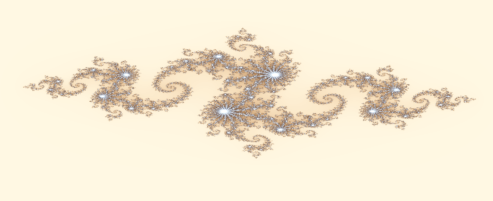
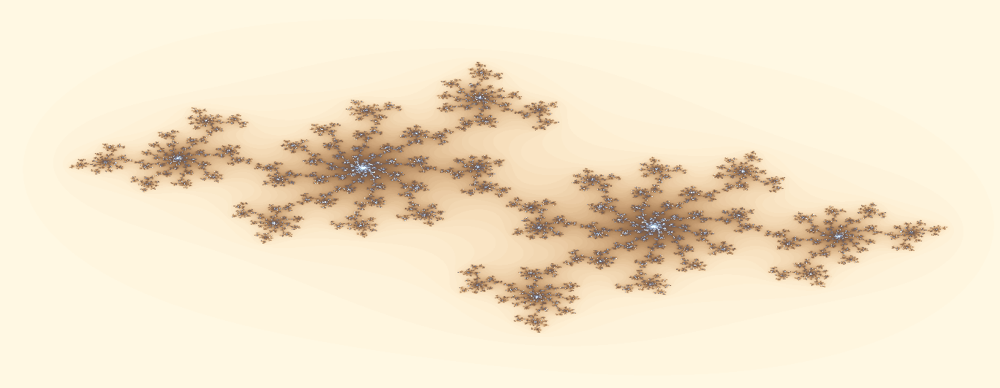
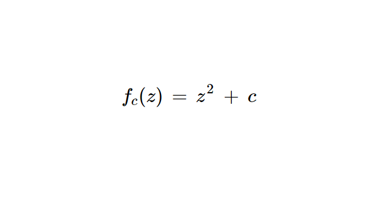
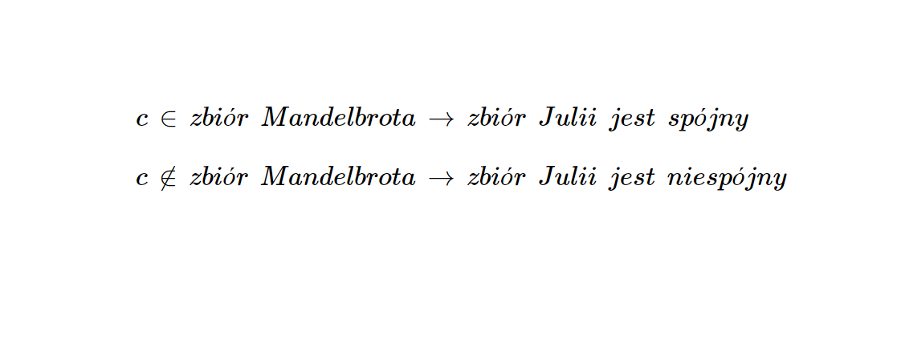
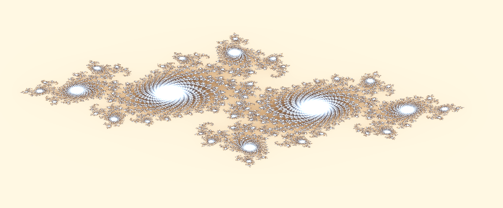
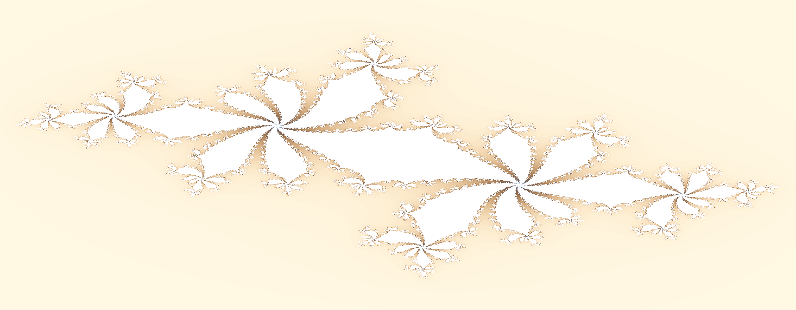

Zbiór Julii
Zbiór Julii opisany pierwszy raz w 1918 roku przez francuskiego matematyka Prace Gastona Julii, jest używany do badania granic stabilności obszarów na płaszczyźnie zespolonej.

Działanie zbioru Julii
Zbiór Julii działa na zasadzie badania punktów na płaszczyźnie zespolonej. Jeśli moduł punktu w któryś z kroków jest większy od 2, oznacza to że obszar jest niestabilny i ucieka do nieskończoności.

Wzór zbioru
Dla dowolnego punktu z0 oraz dla każdej stałej wybranej liczby c, wzór zbioru ujawni jego przynależność. Jeśli moduł któregoś z kroków wyjdzie powyżej 2, oznacza to że punkt nie należy do zbioru.

Powiązanie ze zbiorem Mandelbrota
Zbiór Mandelbrota i Julii są ściśle powiązane. Jeśli punkt c należy do zbioru Mandelbrota, zbiór Julii dla tego punktu będzie spójny (cała struktura będzie ze sobą połączona). W przeciwnym wypadku zbiór Julii dla tego punktu będzie rozłączony.

Zastosowanie zbioru Julii
Mimo że zbiór Julii jest obiektem matematycznym, ma wiele zastosowań. Używa się go w grafice komputerowej, symulacjach procesów naturalnych, kryptografii, fizyce oraz inżynierii.

Ciekawe liczby dla zbioru Julii
Kilka liczb dla których generują się ładne zbiory Julii:
Najpopularniejsza: -0.8 + 0.156i,
Okrąg: 0, (0 + 0i)
Szczegółowy zbiór: -0.7269 + 0.1889i,
Listki: 0.123 + 0.745i
